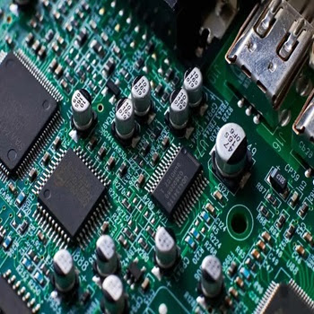

The main objectives of the first week of the embedded systems training program were to:
During the first week of the embedded systems training program, I was introduced to the fundamental concepts of embedded systems. I learned about the architecture of embedded systems, including the components such as microcontrollers, sensors, actuators, and communication interfaces. I also gained an understanding of the different types of embedded systems and their applications in various industries.
One of the key takeaways from this week was the importance of real-time operating systems (RTOS) in embedded systems. I learned how RTOS helps manage the timing and scheduling of tasks in an embedded system, ensuring that critical tasks are executed within specific time constraints. I also explored the basics of programming embedded systems using C language and got hands-on experience with a simple microcontroller development board.
Overall, the first week provided a solid foundation for understanding embedded systems and set the stage for more advanced topics in the coming weeks.
In the next week, I look forward to diving deeper into hardware and software integration, where I will learn how to interface sensors and actuators with microcontrollers and develop more complex embedded applications.
Key learning outcomes from Week 1:
Overall, Week 1 was an exciting start to the embedded systems training program, and I am eager to continue learning and exploring more advanced topics in the weeks ahead.
Next week, I will focus on hardware and software integration, where I will learn how to interface sensors and actuators with microcontrollers and develop more complex embedded applications.
